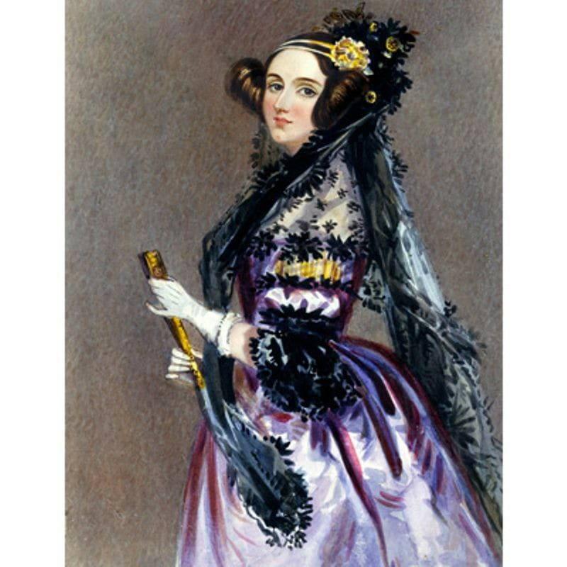
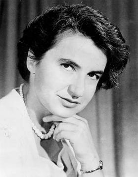
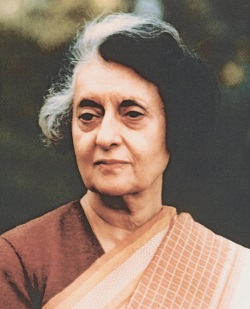
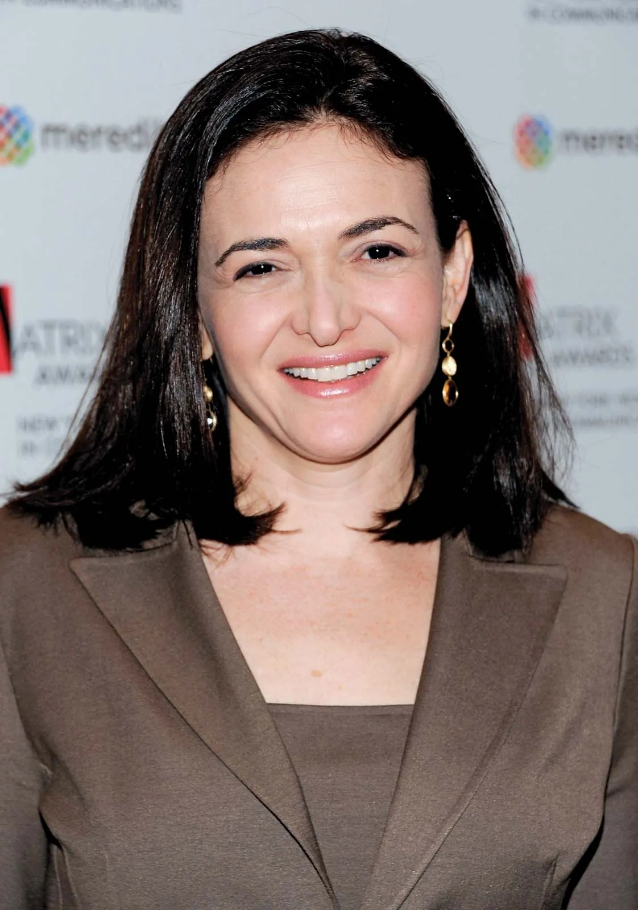
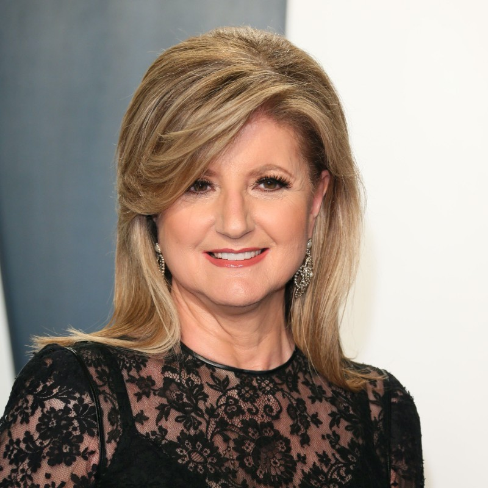
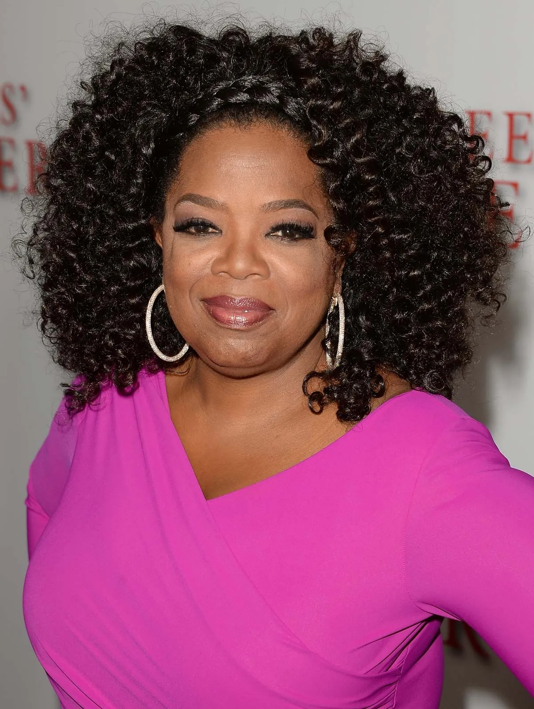
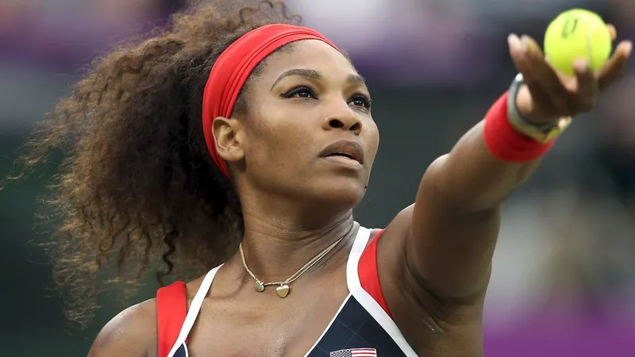
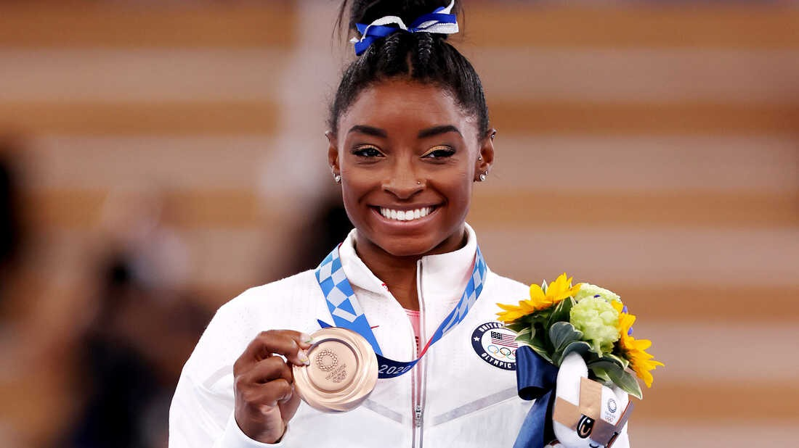
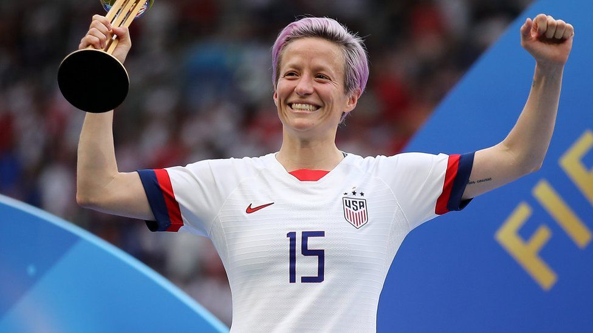

Welcome to Women's Achievements, a website dedicated to celebrating and showcasing the incredible accomplishments of women throughout history and in contemporary times. Our mission is to highlight the stories of women who have broken barriers and achieved success in various fields, from science and politics to arts and sports.
History
The history of women is a vast and complex topic that spans the course of human civilization. Women have played significant roles in shaping societies, cultures, and political systems, yet their contributions have often been overlooked or undervalued. The experiences of women throughout history have been shaped by a range of factors, including social, cultural, economic, and political systems, as well as by individual experiences and identities. Over the centuries, women have faced a variety of challenges and obstacles, including restrictions on their education, legal rights, and access to political power. Despite these barriers, women have worked tirelessly to overcome
Women in Science
-
Ada Lovelace
Augusta Ada King, Countess of Lovelace, better knoAugusta Ada King, Countess of Lovelace, better known as Ada Lovelace, was a British mathematician and writer who is recognized as the world's first computer programmer. She was born on December 10, 1815, in London, England, to a famous poet, Lord Byron, and his wife, Lady Anne Isabella Milbanke.wn as Ada Lovelace, was a British mathematician and writer who is recognized as the world's first computer programmer. She was born on December 10, 1815, in London, England, to a famous poet, Lord Byron, and his wife, Lady Anne Isabella Milbanke.
Scroll
Ada Lovelace (1815-1852) was born Augusta Ada Byron, the only legitimate child of Annabella Milbanke and the poet Lord Byron. Her mother, Lady Byron, had mathematical training (Byron called her his 'Princess of Parallelograms') and insisted that Ada, who was tutored privately, study mathematics too - an unusual education for a woman
As a woman in science, Ada Lovelace faced many challenges and obstacles. During her time, women were not generally encouraged to pursue intellectual pursuits and were often excluded from educational opportunities and scientific communities. Despite these challenges, Ada Lovelace was able to develop her mathematical skills and become a leading thinker in the field of computer science. She was mentored by the famous mathematician and inventor, Charles Babbage, who recognized her talent and encouraged her to pursue her ideas. Lovelace's most significant achievement was her work on the Analytical Engine, a mechanical computer designed by Babbage. Lovelace was able to see beyond the simple calculation of numbers and imagine the potential of computing to create new forms of art and music. She also recognized that computers could be used for more than just number-crunching, envisioning the use of computing for scientific research, engineering, and even military strategy. Lovelace's legacy as a woman in science is significant, and she remains a role model for women who aspire to careers in STEM fields. Her achievements paved the way for other women in science, and her work continues to inspire and influence the development of new technologies today. -
Marie Curie

Marie Curie (1867-1934) was a Polish-French physicist and chemist who is known for her pioneering work on radioactivity. She was the first woman to win a Nobel Prize, and the first person to win two Nobel Prizes in different fields. Marie Curie was born Maria Skłodowska in Warsaw, Poland. She received a general education in Poland and then went to Paris, where she studied at the Sorbonne. There she met Pierre Curie, who would become her husband and collaborator. Together, they studied radioactivity and discovered two new elements, polonium and radium. For their work on radioactivity, the Curies were awarded the Nobel Prize in Physics in 1903. After Pierre Curie's tragic death in a road accident in 1906, Marie Curie continued their research and became the first woman to teach at the Sorbonne. She was awarded a second Nobel Prize, this time in Chemistry, in 1911, for her discovery and isolation of radium and the development of its medical applications. Throughout her career, Marie Curie faced significant obstacles due to her gender, including discrimination and exclusion from scientific organizations. Despite these challenges, she remained committed to her research and her passion for science, and her achievements paved the way for future generations of women in science. Marie Curie's legacy continues to inspire and influence scientific research today. Her work on radioactivity laid the foundation for the development of nuclear physics and technology, and her commitment to scientific discovery and innovation remains an inspiration to scientists around the world.
Scroll -
Rosalind Franklin
Rosalind Franklin (1920-1958) was a British chemist and X-ray crystallographer who made significant contributions to the understanding of the structure of DNA. Her work played a crucial role in the discovery of the double helix structure of DNA, but she did not receive full credit for her contributions until many years after her death. Franklin was born in London and received her education in chemistry and physics at University of Cambridge. She went on to work at several prestigious institutions, including King's College London, where she conducted her groundbreaking work on the structure of DNA. At King's College London, Franklin used X-ray crystallography to study the structure of DNA, producing high-quality images that were crucial to the discovery of the double helix structure. However, her work was not fully recognized by her male colleagues, who later used her data to make their own discoveries without giving her proper credit.
Scroll
Women in Politics
-
Indira Gandhi
Indira Gandhi (1917-1984) was an Indian politician and stateswoman who served as the third Prime Minister of India, holding the office from 1966 until 1977, and again from 1980 until her assassination in 1984. She was the first and only woman to hold the position of Prime Minister in India to date. Gandhi was born into a family of political leaders and became involved in politics at a young age. She served as a key advisor to her father, Jawaharlal Nehru, India's first Prime Minister, and played an active role in the Indian National Congress, one of the country's leading political parties. During her tenure as Prime Minister, Gandhi implemented a number of important social and economic policies, including the nationalization of banks and the establishment of a system of social welfare programs. She also played a leading role in India's foreign policy, seeking to strengthen the country's position on the global stage and promoting greater cooperation with other nations. Gandhi was a controversial figure and faced significant opposition during her time in office. She was accused of authoritarianism and of violating civil liberties, particularly during the period of emergency rule that she declared in 1975. Despite these criticisms, she remained a popular and influential figure in Indian politics until her death. Today, Gandhi is remembered as a pioneering figure in Indian politics and a symbol of women's empowerment in the country. Her achievements as India's first and only female Prime Minister have inspired generations of women to pursue careers in politics and to fight for greater representation and equality in the political sphere.
Scroll -
Angela Merkel
Angela Merkel is a German politician who served as the Chancellor of Germany from 2005 to 2021. She is widely regarded as one of the most influential and powerful women in the world. Merkel was born in Hamburg, West Germany, in 1954, and grew up in East Germany. She earned a doctorate in physics before entering politics in the wake of the fall of the Berlin Wall in 1989. Merkel joined the Christian Democratic Union (CDU) party in 1990 and was appointed Minister for Women and Youth in the government of Chancellor Helmut Kohl in 1991. She went on to serve as the Minister for the Environment, Nature Conservation, and Nuclear Safety from 1994 to 1998. In 2000, Merkel was elected as the CDU's first female leader, and in 2005 she became Germany's first female Chancellor. She was reelected to the position four times, making her the longest-serving head of government in Europe. Merkel is known for her pragmatic approach to politics, her commitment to European integration, and her strong leadership during times of crisis, including the Eurozone crisis, the refugee crisis, and the COVID-19 pandemic. Throughout her career, Merkel has been a strong advocate for gender equality, climate change action, and international cooperation. She has received numerous awards and honors, including the Presidential Medal of Freedom from President Barack Obama in 2011. Merkel's legacy as a woman in politics is significant. She has broken barriers for women in leadership roles and has served as a role model for women in Germany and around the world. Her contributions to politics and public service will continue to be recognized and celebrated for years to come.
Scroll -
Rosalind Franklin
Rosalind Franklin (1920-1958) was a British chemist and X-ray crystallographer who made significant contributions to the understanding of the structure of DNA. Her work played a crucial role in the discovery of the double helix structure of DNA, but she did not receive full credit for her contributions until many years after her death. Franklin was born in London and received her education in chemistry and physics at University of Cambridge. She went on to work at several prestigious institutions, including King's College London, where she conducted her groundbreaking work on the structure of DNA. At King's College London, Franklin used X-ray crystallography to study the structure of DNA, producing high-quality images that were crucial to the discovery of the double helix structure. However, her work was not fully recognized by her male colleagues, who later used her data to make their own discoveries without giving her proper credit.
Scroll
Contemporary
Contemporary women continue to face a range of challenges and obstacles, including gender-based discrimination, unequal pay and job opportunities, and limited representation in positions of power. Despite significant progress in some areas, women still face barriers to achieving full equality in many aspects of life. However, contemporary women have also made significant strides in areas such as education, entrepreneurship, and activism. Women have started and led successful businesses, run for and held political office, and played a pivotal role in social movements aimed at promoting gender equality, racial justice, and other important causes. The experiences and contributions of contemporary women continue to shape the world we live in today.
Women in Business
-
Sheryl Sandberg
Sheryl Sandberg is an American technology executive, author, and philanthropist. She is best known for her role as the Chief Operating Officer (COO) of Facebook, where she has played a key role in the company's growth and success. She is also the founder of the Lean In Foundation, a nonprofit organization dedicated to helping women achieve their goals and advance in their careers. Sandberg was born in 1969 in Washington, D.C. She received her bachelor's degree in economics from Harvard University and went on to earn a Master of Business Administration (MBA) from Harvard Business School. After graduating, she worked for the World Bank and then for the United States Treasury Department, where she was instrumental in the development of the online bond trading platform. In 2001, Sandberg joined Google as its Vice President of Global Online Sales and Operations, where she helped to develop the company's online advertising business. In 2008, she joined Facebook as its COO, where she has played a key role in the company's growth and success. She has been credited with helping to develop Facebook's advertising business and for helping to lead the company's transition to a public company. In addition to her work at Facebook, Sandberg is also the author of two bestselling books: "Lean In: Women, Work, and the Will to Lead" and "Option B: Facing Adversity, Building Resilience, and Finding Joy". These books explore issues related to women's leadership and empowerment, and they have been praised for their insights and practical advice. Sandberg is also a prominent philanthropist, and she has donated millions of dollars to various causes, including education, women's health, and economic development. She is a vocal advocate for women's rights and has been recognized for her contributions to gender equality and social justice.
Scroll -
Arianna Huffington
Arianna Huffington is a Greek-American author, columnist, and businesswoman. She is best known as the co-founder and editor-in-chief of the Huffington Post, a widely read news and opinion website. Here are some of her notable achievements: Founding the Huffington Post: Huffington co-founded the Huffington Post in 2005, which quickly became one of the most popular news and opinion websites in the world. The site was later acquired by AOL for $315 million in 2011. Advocating for sleep and wellness: After collapsing from exhaustion in 2007, Huffington became an advocate for getting enough sleep and taking care of one's mental and physical health. She has since written several books on the topic and founded the wellness company Thrive Global. Authoring multiple books: Huffington has authored 15 books on a wide range of topics, including politics, media, and wellness. Her most recent book, "The Time to Build," focuses on the importance of infrastructure and public institutions. Serving on numerous boards and committees: Huffington has served on several boards and committees, including the Board of Directors of Uber and the Committee to Protect Journalists. She has also been involved in several philanthropic organizations, including the Skoll Foundation and the Women's Media Center. Being recognized for her work: Huffington has received numerous awards and honors for her work, including being named one of Time Magazine's 100 most influential people in the world, and being inducted into the Broadcasting and Cable Hall of Fame. She was also awarded the Ellis Island Medal of Honor in 2010 for her work as an immigrant advocate.
Scroll -
ROprah Winfrey
Oprah Winfrey is a media executive, talk show host, actress, producer, and philanthropist. She is widely regarded as one of the most influential women in the world and has made a significant impact on popular culture, business, and philanthropy. Here are some of Oprah Winfrey's achievements as a woman in media and business: Hosting "The Oprah Winfrey Show": From 1986 to 2011, Oprah Winfrey hosted "The Oprah Winfrey Show," a daytime talk show that tackled a wide range of topics, including health, relationships, self-improvement, and current events. The show was incredibly popular and had a profound impact on American culture, making Oprah one of the most well-known and beloved personalities on television. Founding and leading OWN: In 2011, Oprah Winfrey launched the Oprah Winfrey Network (OWN), a cable television network that features original programming and content aimed at empowering and inspiring viewers. As the CEO and chairman of OWN, Oprah has been instrumental in the network's success and has used it as a platform to promote positive social change. Acting and producing: Oprah Winfrey has appeared in a number of films and television shows throughout her career, including "The Color Purple," "Selma," and "The Immortal Life of Henrietta Lacks." She has also produced a number of successful projects, including the Tony-winning Broadway musical "The Color Purple." Philanthropy: Oprah Winfrey is known for her philanthropic work and has donated millions of dollars to various causes and organizations, including education, health care, and the arts. She has also established the Oprah Winfrey Leadership Academy for Girls in South Africa, which provides education and support to young women in need. Influence and recognition: Oprah Winfrey is widely regarded as one of the most influential women in the world and has been recognized with numerous awards and honors, including the Presidential Medal of Freedom, the highest civilian honor in the United States. She has also been named one of the most powerful women in business by Forbes magazine and one of the 100 most influential people in the world by Time magazine.
Scroll
Women in Sports
-
Serena Williams
Serena Williams was born to parents Richard Williams and Oracene Price. She grew up in Compton, California, where her father, who had no prior tennis experience, began coaching her and her older sister Venus at a young age. The Williams sisters quickly showed promise, and their father's unorthodox coaching methods helped them develop a unique style of play that focused on power and aggression. Serena Williams is considered one of the greatest tennis players of all time, with a record 23 Grand Slam singles titles to her name. She was born in Saginaw, Michigan in 1981, but grew up in Compton, California. Her father, Richard Williams, was her primary coach and instilled in her a strong work ethic and drive to succeed. Serena turned professional in 1995 at the age of 14 and quickly made a name for herself on the tour. She won her first Grand Slam singles title at the 1999 US Open, and by the early 2000s, she had established herself as the dominant player in women's tennis. She has won a total of 73 singles titles and 23 doubles titles in her career. Serena is known for her powerful serve and aggressive playing style, as well as her mental toughness on the court. She has also been a trailblazer for women and minorities in tennis, breaking down barriers and paving the way for future generations of players.
Scroll -
Simone Biles
Simone Biles is an American artistic gymnast who is widely considered one of the greatest gymnasts of all time. She was born on March 14, 1997, in Columbus, Ohio, and began her gymnastics career at a young age. Biles made her international debut at the 2013 American Cup, where she won the all-around title. She quickly established herself as a dominant force in gymnastics, winning numerous national and international titles over the following years. She has won a total of 30 Olympic and World Championship medals, including 19 gold medals. Biles is known for her incredible athleticism, innovative skills, and ability to perform under pressure. She has pushed the boundaries of what is possible in gymnastics, and has been credited with popularizing difficult new skills that were previously considered too risky to attempt. Off the mat, Biles has been an outspoken advocate for mental health and has used her platform to raise awareness about the importance of seeking help for mental health issues. She has also been a vocal advocate for survivors of sexual abuse, having come forward with her own story of abuse by former USA Gymnastics team doctor Larry Nassar. her achievement in sports Simone Biles' achievements in sports are numerous and impressive. She has won a total of 30 Olympic and World Championship medals, including 19 gold medals. Here are some of her notable achievements: Biles has won four consecutive all-around titles at the U.S. National Championships (2013-2016), making her the first woman to do so since Joan Moore Gnat in 1974. She has won 10 gold medals at the World Championships, the most by any female gymnast in history. Biles has won five Olympic medals, including four gold medals at the 2016 Rio de Janeiro Olympics. She won gold medals in the individual all-around, vault, and floor exercise, as well as a gold medal as part of the U.S. team. In 2019, Biles became the first woman to attempt and successfully land a triple-double (three twists and two flips) in competition, both on the floor exercise and on the balance beam. She also introduced a new double-double dismount off the balance beam, which is now named after her. Biles has been named the United States Olympic Committee's Female Athlete of the Year three times (2014, 2015, and 2019) and has been named the Women's Artistic Gymnastics Athlete of the Year five times by the International Gymnastics Federation (2014-2016, 2018-2019).
Scroll -
Megan Rapinoe
Megan Rapinoe is an American soccer player who has made significant contributions both on and off the field. She has been a prominent figure in women's soccer for over a decade and has become an inspiration for many through her activism and advocacy. Rapinoe's soccer career began at the University of Portland, where she won a national championship in 2005. She went on to play for several professional teams, including the Seattle Reign and the OL Reign, as well as the United States Women's National Team. She has won multiple Olympic gold medals and FIFA Women's World Cup championships with the USWNT. Off the field, Rapinoe has been an outspoken advocate for social justice and equality. She has been a leader in the fight for equal pay for women's soccer players, and has used her platform to speak out about a range of issues, including LGBTQ rights, racial justice, and gender equality. She has also been involved in various organizations that support these causes, such as the Women's Sports Foundation and the LGBTQ advocacy group Athlete Ally. Rapinoe's activism and dedication to using her platform for good have earned her widespread admiration and respect, both within and outside of the soccer world. She has become a role model for young people who are looking to make a difference in their communities, and her impact on the world of sports and beyond is sure to continue for many years to come. her achievement in sports Megan Rapinoe is a professional soccer player from the United States. She has played for the U.S. women's national soccer team since 2006 and has won numerous titles and awards throughout her career. Here are some of her achievements in sports: Olympic Gold Medals: Megan Rapinoe has won two Olympic gold medals as a member of the U.S. women's soccer team. She was part of the team that won the gold medal at the 2012 London Olympics and the 2020 Tokyo Olympics. FIFA Women's World Cup: Rapinoe has won two FIFA Women's World Cup titles with the U.S. women's national soccer team. She was part of the team that won the tournament in 2015 and 2019. In the 2019 tournament, Rapinoe was awarded the Golden Boot and the Golden Ball for her outstanding performances. National Women's Soccer League: Rapinoe has played for several teams in the National Women's Soccer League (NWSL) in the United States. She has won two NWSL championships with the Seattle Reign FC in 2014 and 2015. Professional Awards: Rapinoe has won numerous professional awards throughout her career, including the Ballon d'Or Féminin in 2019, which is awarded to the best female soccer player in the world. Activism: In addition to her achievements in sports, Rapinoe is also known for her activism and advocacy work. She has been an outspoken advocate for LGBT rights, equal pay for women athletes, and racial justice. In 2020, she was named Sports Illustrated's Sportsperson of the Year for her activism and contributions to the world of sports.
Scroll